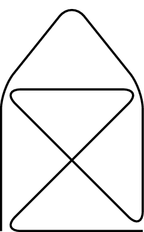
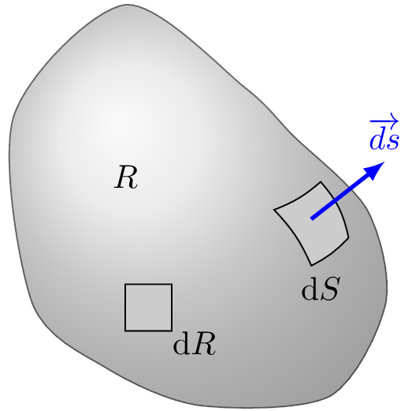

Read time: 0.9 minutes (89 words)
Symbols used in Derivations¶
TikZ¶
This is a test of tikz
Volume Integral¶
\[\newcommand{\oiiint}{{\Large{\subset\!\supset}} \llap{\iiint}}
\oiiint_V\]
Note
This is not “pretty”. It needs to be replaced with a MathJax compatible verison later.
Surface Integral¶
\[\newcommand{\oiint}{{\subset\!\supset} \llap{\iint}}
\oiint_S\]
Gradiant¶
The gradient of a function \(\mathbf{f}\) at point \(a\) is:
\[\overrightarrow{\nabla} \mathbf{f}(a)\]
The resulting vector indicates the direction and the maximum rate of increase of the function at the specified point.
Flux¶
Let \(\mathbf{q}\) be a quantity that can move, like mass, energy, or momentum. Now define \(\rho\) as the density of that quantity per unit volume. Let \(R\) be an arbitrary volume, bounded by a closed surface \(S\), then the flux
Divergence Theorem¶
\[ \begin{align}\begin{aligned}\newcommand{\oiint}{{\subset\!\supset} \llap{\iint}}
\newcommand{\oiiint}{{\Large{\subset\!\supset}} \llap{\iiint}}\\\oiiint_V (\nabla\cdot\overrightarrow{\mathbf{F}}dV =
\oiint_S(\mathbf{F}\cdot\overrightarrow{\mathbf{n}} dS\end{aligned}\end{align} \]
